Analytic question
fit_subgroups() fits one model per discovered or
supplied subgroup and can compare those models with pooled and
individual alternatives. The function takes a panel, outcome,
predictors, person identifier, subgroup mapping, and model family. It
returns an idiographic_fit with the usual tidy
accessors.
fit_subgroups() defaults to scope = "all".
The pooled scope estimates one coefficient vector. The subgroup scope
estimates one vector per group. The individual scope estimates one
vector per person. All scopes predict the same ordered test rows.
Estimate subgroup assignments
find_subgroups() supplies a two-group effect-clustering
result. This first stage defines the subgroup mapping used by the fitted
models.
subgroup_result <- find_subgroups(analysis_data, y = "effort", x = c("efficacy", "monitoring"), id = "name", method = "effect_clustering", k = 2, reps = 20, time = "day")
groups(subgroup_result, sort_by = "subgroup")
#> subject subgroup method stability n_assignments
#> 1 Astrid g1 effect_clustering 0.9833333 20
#> 2 Diana g1 effect_clustering 0.9500000 20
#> 3 Fatima g1 effect_clustering 0.9833333 20
#> 4 Frank g1 effect_clustering 0.9833333 20
#> 5 Aisha g2 effect_clustering 0.5428571 20
#> 6 Alice g2 effect_clustering 0.8285714 20
#> 7 Anika g2 effect_clustering 0.8285714 20
#> 8 Bjorn g2 effect_clustering 0.8285714 20
#> 9 Bob g2 effect_clustering 0.8285714 20
#> 10 Charlie g2 effect_clustering 0.4571429 20
#> 11 Erik g2 effect_clustering 0.8285714 20
#> 12 Eve g2 effect_clustering 0.8000000 20groups() reports assignments and their resampling
stability in Table 1. These labels are estimated quantities. Prediction
comparisons should retain that first-stage uncertainty in their
interpretation.
Fit and compare three scopes
fit_subgroups() fits linear models for all three scopes.
Table 2 reports aggregate held-out metrics.
subgroup_fit <- fit_subgroups(analysis_data, y = "effort", x = c("efficacy", "monitoring"), id = "name", subgroup = subgroup_result, method = "lm", time = "day")
metrics(subgroup_fit, overall = TRUE)
#> scope model estimator subject subgroup n rmse mae bias
#> 1 pooled lm native .overall .all 384 23.22627 18.97802 0.4108068
#> 2 subgroup lm native .overall .all 384 22.77474 18.75270 0.4693698
#> 3 individual lm native .overall .all 384 19.83725 15.68630 0.5814738
#> r_squared
#> 1 0.2897850
#> 2 0.3171306
#> 3 0.4819235fit_subgroups() gives the subgroup models an RMSE of
about 22.8 in Table 2. The pooled RMSE is about 23.2, and the individual
RMSE is about 19.8. The two-group model improves modestly over pooling
but does not match the individual models on this split.
Plot the scope comparison
plot_metrics() displays the common held-out metric for
pooled, subgroup, and individual scopes. Position and colour distinguish
the modelling scopes.
plot_metrics(subgroup_fit, metric = "rmse")
Figure 1. Held-out RMSE for pooled, subgroup, and individual linear models.
Figure 1 shows the subgroup model between the pooled and individual models in prediction error. The result quantifies the compromise between one model for everyone and one model per person.
Assumptions and failure checks
fit_subgroups() treats the supplied mapping as fixed
during model fitting. Assignments estimated from the same outcome data
can make subgroup performance optimistic. A confirmatory analysis should
derive groups in separate data or repeat the complete
discovery-and-fitting pipeline within resampling.
fit_subgroups() requires at least one usable training
and test set for each requested scope. Small groups can fail even when
pooled and individual models succeed. The failure table identifies these
cases. Subgroup prediction does not by itself show that discrete
populations exist.
When to use which
fit_subgroups() is appropriate when a defensible mapping
exists and the question concerns group-specific prediction.
fit_lm() or fit_glm() with a subgroup column
provides the same lower-level fitting engine.
test_subgroups() addresses existence.
find_subgroups() addresses assignment.